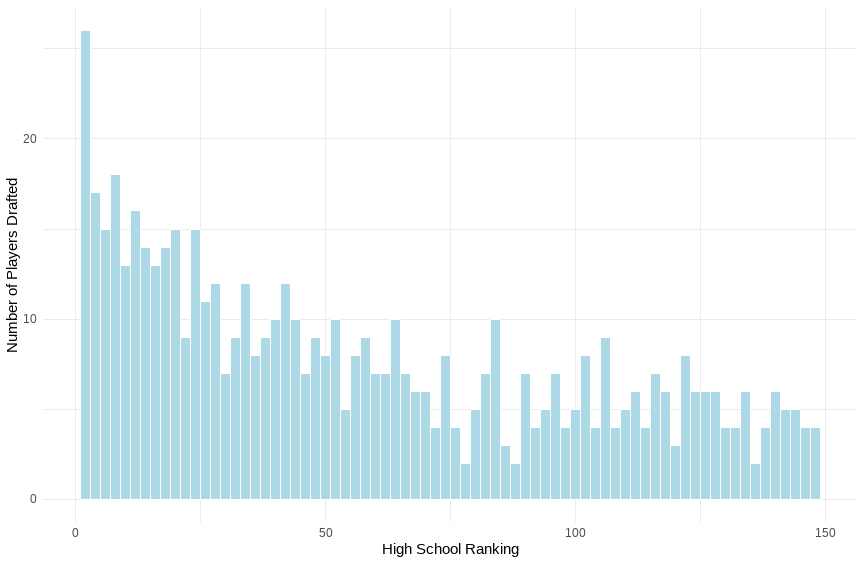
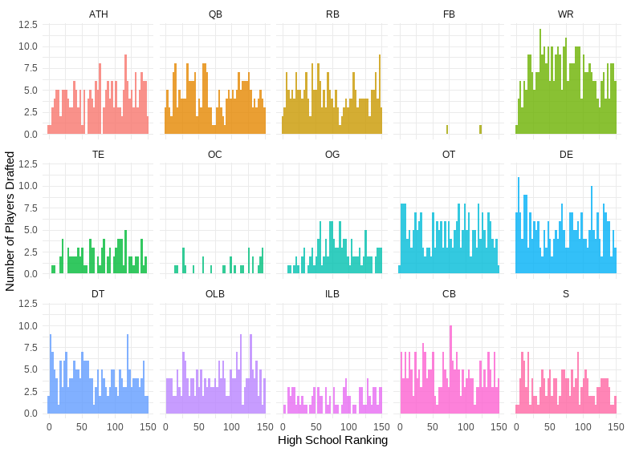
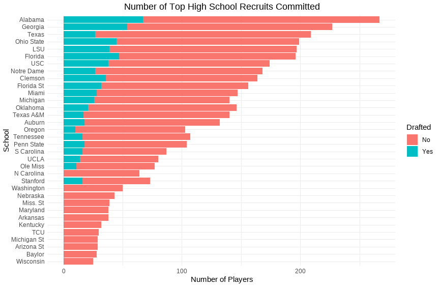

Analyzing the High School Recruit to NFL Draft Pick Pipeline
Each year, ESPN ranks the top 300 high school football recruits in the country. Players are evaluated on a variety of metrics to determine how they compare vs. their peers by state, position, and across the nation. These lists are usually a great indicator of how impactful players are for their varsity team. For example, Malachi Nelson, the #1 ranked player in the class of 2023, passed for 2,898 yards and 35 touchdowns this past season. Next year he’ll be attending the University of Southern California (USC), where fans and analysts will be evaluating whether he’s the next future NFL star. We’ve seen plenty of examples of that in recent history. Just five years ago, Justin Fields and Trevor Lawrence, now rising QBs in the NFL, ranked as the number 1 and number 2 players in the class of 2018.
As I mentioned, the top 300 list is meant to reflect how talented players are at a given point in time. But how well does it predict future success? One would think recruiting grades correlate well with eventual draft likelihood, but is that actually the case? Furthermore, do those trends hold across all positions? In this analysis, I set out to start answering those questions.
First, we need to gather all the necessary data. I initially built a web scraper in Python to pull data for the top high school football recruits between 2006 and 2023 from ESPN.com. I used the pandas library to read the HTML tables on each webpage, clean the data, and extract it to a separate excel file. I then ran some simple excel functions to combine that dataset with the nflverse-data repository on Github. From that, we were left with a list that contains 4,350 players. I then used ggplot2 in R to run the analysis below.
Ranking Successful Players
Let’s start with a general view of all draftees, and how they ranked in high school. This table outlines the high school ranking of each player that was drafted between 2009 and 2023. This list only includes draftees that were ranked in high school, and you may be surprised to learn that most draft picks in any given year weren’t ranked among the top 150 players of their recruiting class. With the subset of players that were, in fact, ranked that high, we see that those ranked in the top 50 did indeed have a higher likelihood of being drafted than those ranked lower. That said, beyond the top 50, those differences become far less pronounced.

The first takeaway here may be that truly top talents are easy to evaluate from an early age, but measuring performance beyond that point becomes more difficult. The dynamic is even more interesting if we break things down by position.

A few interesting themes emerge here. First, skill positions like WR tend to comprise a meaningful selection of the top ESPN recruits each year. This makes sense if we think about the depth chart of any given football team. Unlike many other positions (ex: FB), there will often be 2-4 receivers on the field at a time, which makes the position itself that much more valuable.
That said, we still see some interesting dynamics within positions. Prior to this analysis, my hypothesis was that certain positions may have a higher likelihood of being drafted after ranking highly in high school than others. Instead, the themes across each of these are relatively consistent. I suppose this makes sense too. Think for a moment about five of the top QBs in the league at this moment (Patrick Mahomes, Jalen Hurts, Joe Burrow, Josh Allen, and Justin Herbert). Of those players, only Joe Burrow was ranked among the Top 300 high school recruits coming into college, and he ranked 298th. It’s hard to predict these things.
Talent Evaluation by School
I was also curious whether the colleges these recruits were choosing were any better at picking future NFL draft picks than others. The chart below outlines the number of high school recruits that committed to each school over the same time period mentioned above and excludes any schools that did not recruit at least 25 top 300 players. In general, powerhouse schools like Alabama, Georgia, and LSU recruited significantly more top-rated players than other schools.

Before making any conclusions from this data set, I think it’s important to note a few important factors here. 1.) Some schools may have better systems and development programs than others, which can significantly impact a recruit’s ability to reach the NFL. 2.) Some schools may pass on clear-cut future NFL stars due to their existing depth chart. An obvious example can be found in 2018. It was not in the interest of the teams or players for one school to receive commits from both Justin Fields and Trevor Lawrence. Various situational dynamics have existed over the past several years like this. Beyond that, it’s also often in the interest of an incoming recruit to choose a school where he’s more likely to make an immediate impact, rather than waiting behind a stacked Alabama roster. 3.) This list is based on the schools that players committed to, not the schools they attended when they were drafted. For example, Cam Newton is technically listed as a recruit of ‘Florida’ in this dataset, rather than Auburn, where he won a Heisman and a national championship. While some interesting exploration can be done on that data, I wanted to isolate any transfer-portal related dynamics, so that we can evaluate a school’s ability to choose recruits.
Lastly, it’s also just worth mentioning that schools don’t definitively choose their recruits. They extend offers to athletes, who then have the choice of choosing from a selection of different schools. Perhaps in a future analysis, we can investigate a more detailed dataset that includes “offers extended” from each school, rather than just “offers accepted.”
From the table above, we can see that the data doesn’t necessarily show any clear trends. While schools like Alabama and Georgia generated more future NFL draft picks than other schools, they also tended to recruit more Top 150 high school players. In other words, their ability to choose and develop future NFL talent isn’t necessarily higher than their peers on a relative basis. A notable exception seems to be Texas, who generates a significantly lower % of drafted players than its peers.
Conclusion
This dataset may confirm some priors about high school recruiting and perhaps dispel some notions about talent evaluation in football. Here are some takeaways:
1.) There is a correlation between a player’s high school ranking and their likelihood of being drafted. That said, the correlation decreases for players ranked outside the top 50.
2.) There isn’t a clear theme between a player’s position and their likelihood of being drafted. There are certainly more WRs drafted than say, ILBs, but there are also more WRs among the top ranked players to begin with.
3.) There isn’t a clear trend in talent evaluation among the top schools. Powerhouse schools attract more top recruits, and as we know, those players have a higher likelihood of being drafted. But the percentage of players drafted across the top ~20 schools is consistent.
This is part 1 of an ongoing series where I analyze the high school recruit to NFL draft pick pipeline. In the future, I hope to expand this dataset and continue investigating trends among players and schools.